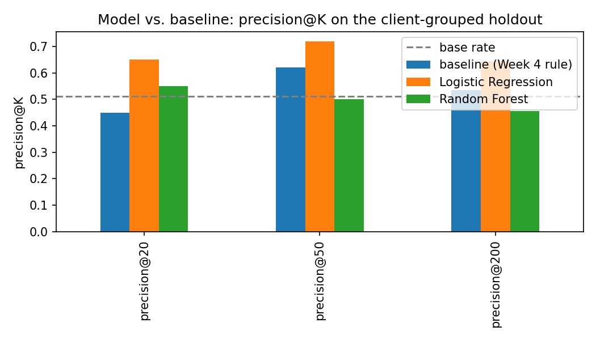
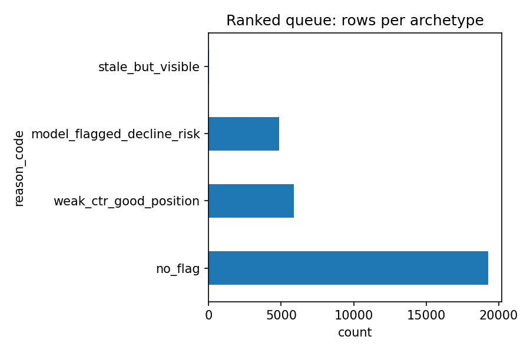

Content teams with limited review capacity face a basic prioritization question: which pages, among thousands, are most worth checking first? Using a 30,000-page, 32-client anonymized search performance snapshot, this project built a transparent rule baseline and tested whether a validated learned model could out-rank it on a client-grouped holdout — clients the model had never seen during training. Logistic Regression outperformed both the rule baseline and a Random Forest at every precision@K reported (0.65 / 0.72 / 0.645 at K = 20 / 50 / 200, against a test base rate of 0.511), while the simple baseline itself scored no better than chance (ROC-AUC 0.500). The result ships as a ranked, reason-coded action queue — three transparent archetypes covering roughly 36% of pages — intended as decision-support for a human reviewer, not an automated action. All code, data exclusions, and validation design are public and reproducible from the linked repository.
A content or SEO team rarely has the capacity to manually review every page they own. Some pages are quietly declining and still worth protecting; others rank well but are leaking clicks; most need no attention at all. Today that triage decision is often made ad hoc — by whoever has time, working from memory or a spreadsheet.
This project turns that decision into a ranked, explainable queue: given a snapshot of a page's activity, staleness, and search performance, which pages are most worth a human's time first, and why? The goal was not to build the most complex model possible, but to find out honestly whether a validated model actually beats a simple, readable rule at this task — and to be equally honest about where it doesn't.
This work uses the FlyRank internship starter dataset: 30,000 rows, one per pseudonymized content item, spanning 32 pseudonymized clients, with all metrics aggregated over a trailing 90-day window at export time. It is a single cross-sectional snapshot, not a time series — there is no repeated time axis in this file to split on.
The full ~79-million-row FlyRank warehouse release was also accessible for this project. The starter snapshot was used instead so this capstone could build directly on four weeks of already-audited work (signal checks, an honest grouped-split model, and a leakage audit) rather than re-deriving all of it at warehouse scale. Extending this analysis to the warehouse — with a genuinely time-aware label built from daily performance rows — is named explicitly as future work in the Limitations section below, not silently skipped.
content_id, client_id — pseudonyms, used only for grouping
and joins, never as model features.trend_pct, trend_direction, and the label itself — the
outcome and its direct source, never used as inputs.trend_pct is computed from —
including these would let a model reconstruct the label almost exactly.No client names, domains, URLs, or private search queries appear anywhere in this dataset, this paper, or the underlying code — every identifier is a pseudonym used only for grouping.
The target is an observed outcome in the snapshot itself: a page is labeled "declining" when its trailing 30-day search impressions fell more than 20% versus the prior 30-day window. Base rate across the full dataset: 54.2%.
The baseline is a transparent, hand-written rule with no fitted weights: a page scores as "stale but visible" when it has gone 180+ days without an update and still has 500+ impressions in the trailing 90 days. A person can read and audit this rule in one sentence — that readability is the point of a baseline.
90-day activity totals, derived rates (click-through rate, average search position, engagement rate), keyword-context fields, and transparent tier/bucket columns — all confirmed, programmatically, to exclude every label-derived or ID column listed above.
Models were evaluated on a client-grouped 80/20 split (not a random row split): every page from a given client stays entirely on one side of the split. This matters because pages from the same client share client-level baseline traffic and style — a random split would let a model partly learn "this is client X's pattern" instead of the general one, overstating how well it would work on a client it has never seen. A random split was deliberately not used for the headline numbers below for this reason.
Every banned column (the label, its direct sources, and provider/model metadata) was confirmed programmatically absent from the feature matrix — not just eyeballed. A deliberate test additionally reintroduced a known-leaky column and confirmed the evaluation harness reacted as expected, verifying that the "clean" result below wasn't clean by accident.
All three approaches — the rule baseline, Logistic Regression, and Random Forest — were evaluated on the exact same client-grouped holdout, at the same metrics: precision@K (of the top K the ranking flags, how many were actually declining?) and ROC-AUC, both reported next to the test-set base rate.
| Model | Base rate (test) | ROC-AUC | Precision@20 | Precision@50 | Precision@200 |
|---|---|---|---|---|---|
| Baseline (rule) | 0.511 | 0.500 | 0.450 | 0.620 | 0.535 |
| Logistic Regression | 0.511 | 0.582 | 0.650 | 0.720 | 0.645 |
| Random Forest | 0.511 | 0.602 | 0.550 | 0.500 | 0.455 |

The hand-written baseline performed at chance on ROC-AUC (0.500) despite beating the base rate at precision@50. A simple rule can look useful at one specific cutoff while carrying no real ranking signal overall — reporting only one metric would have hidden this.
Random Forest had the higher overall ROC-AUC (0.602 vs. 0.582) but lost to Logistic Regression at every precision@K reported — including falling below the base rate at K = 200 (0.455 vs. 0.511). A stronger-looking aggregate metric did not translate into a better top-of-queue ranking, which is the metric that actually matters for a review queue. Logistic Regression is the model this project's recommendations are built on, precisely because of this gap, not despite it.
stale_but_visible
archetype fired on only 17 of 30,000 rows (0.06%) — its two thresholds, taken together,
are strict enough that this rule alone flags almost nothing in this dataset. This is a
rule-design limitation worth naming, not a strength to imply.
The validated ranking becomes an action queue: three transparent archetypes, each with a trigger, a reason code, and an action — plus a fourth catch-all for pages the model flags as elevated risk that neither rule catches.
| Archetype | Trigger | Reason code | Action | Rows (of 30,000) |
|---|---|---|---|---|
| Stale but visible | 180+ days since update, 500+ impressions/90d | stale_but_visible |
Review for refresh | 17 (0.06%) |
| Good position, weak CTR | Top-3 or page-1 position, CTR below that tier's median | weak_ctr_good_position |
Review for CTR fix | 5,870 (19.6%) |
| Model-flagged, rules silent | Top-20% predicted decline risk, neither rule above fired | model_flagged_decline_risk |
Review, general | 4,850 (16.2%) |
| None of the above | — | no_flag |
No action | 19,263 (64.2%) |

Every step above — feature engineering, the grouped split, the leakage checks, and the
final ranking — is reproducible with a fixed random seed (random_state = 42)
from the notebooks below.
To rerun: clone the repository, open each notebook in Google Colab, and run top to bottom — the first cell of each clones the repo and sets the working directory automatically.
git clone https://github.com/HaseebAfridi65/HaseebFlyRankStarter.git